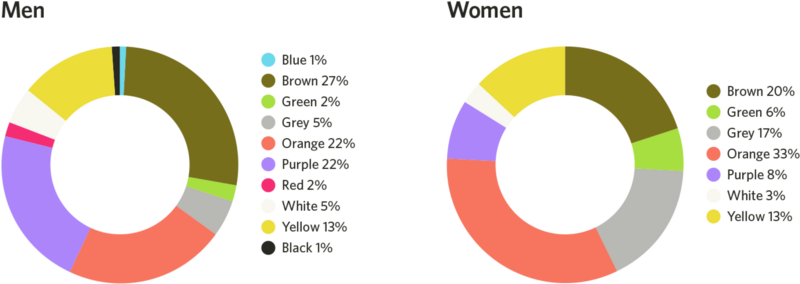

Цвет – это ощущение, возникающее в органе зрения при воздействии на него света, то есть свет + зрение = цвет.
В 1665 году английский ученый Исаак Ньютон доказал, что обычный белый цвет – это смесь лучей разного цвета (см. приложение I рис. 1). На пути солнечного луча ученый поставил особое трехгранное стеклышко – призму. На противоположной стене он увидел разноцветную полоску – спектр. Объяснил он это тем, что призма разложила белый цвет на составляющие его цвета.
Цвет определяется длиной световой волны. Свет распространяется в пространстве волнами, напоминающими движение волн в водоемах. Длина световой волны – это расстояние между двумя соседними гребнями. Оно настолько мало, что измеряется миллионными долями миллиметра. Диапазон этих значений можно приблизительно разделить по убыванию длины волны на семь полос – красную, оранжевую, желтую, зеленую, голубую, синюю и фиолетовую (см. приложение I рис. 2). Чистые спектральные краски носят название цветов, промежуточные называют оттенками. Цвета, встречающиеся в природе, представляют собою смесь световых волн разной длины. Самые короткие – волны фиолетового цвета, самые длинные – красные. Цвета можно воспроизводить, подобрав подходящую длину волны и смешав ее с белым светом соответствующей яркости.
Цвета делятся на: холодные, теплые, смешанные и нейтральные.
Холодные цвета оказывают успокаивающее действие. К холодным цветам относятся: синий, голубой, зеленый.
Теплые цвета передают самые различные эмоции и состояния – от оптимизма до твердости. Теплые цвета – красный, желтый, розовый, оранжевый.
Смешанные цвета получены смешением теплого и холодного цвета. Цвета, имеющие свойства как теплых, так и холодных цветов.
Нейтральные цвета помогают привлечь внимание к более насыщенным цветам, или служат для того, чтобы немного приглушить слишком яркие цвета. Это белый, черный, коричневый, бежевый, золотой, серебряный, серый.
Цветоведение изучает и раскрывает основные закономерности в области цветовых явлений природы, создаваемой человеком предметной среды и всего мира искусств.
Цветоведение объясняет эти явления с позиции ряда наук: физики, математики, химии, психологии, психофизиологии, эстетики, искусствознания, теории композиции, археологии, этнографии, культурологии.
Так, оптический раздел физики раскрывает закономерность природы цвета и его характеристики. Химия исследует свойство веществ и их соединений для разработки рецептур красителей, адекватных требуемым цветам и их сочетаниям. Математика позволяет осуществлять количественную оценку цветов и определять по соответствующим координатам цветовых графиков цветовой тон и насыщенность требуемого цвета. Психофизиология раскрывает закономерности физиологии цветного и черно-белого зрения и природу оптических иллюзий. Психология исследует ассоциации, эмоции, образы, вызываемые различными цветами и их сочетаниями. Эстетика исследует законы гармонизации цветовых сочетаний.
На главную